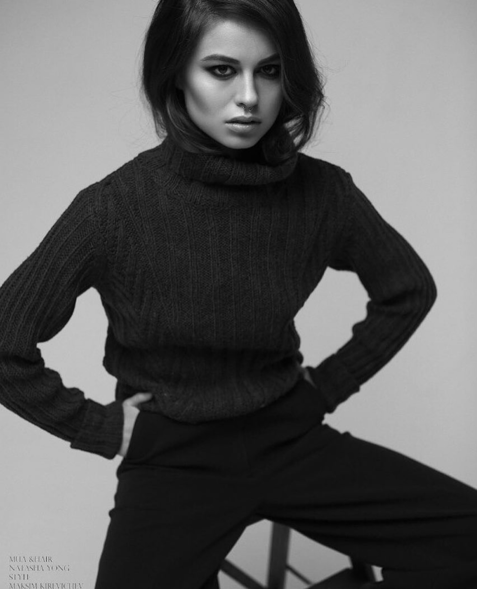

Original paintings · Leuven, Belgium
A little more
colour.
Flowers, familiar places, a moment at the table. Original paintings in oil and oil pastel, made to become part of your everyday.
Selected paintings
Find something
to live with.
A few available works, from expressive colour to the quieter detail of a still life.
3 panels · 60 × 30 cm each · Oil on canvas
60 × 80 cm · Oil on canvas
80 × 60 cm · Oil on canvas
60 × 80 cm · Oil on canvas
Explore the gallery
Different subjects.
The same curiosity.
Move between flowers and table settings, open landscapes, and the expressive marks of oil pastel.

Behind the paintings
Painted in layers.
Made to be lived with.
My name is Kristina. I work primarily with oil on canvas, moving between still life, landscape and more expressive painting.
I’m drawn to atmosphere: the pause in a room, the weight of a colour, the way light can make something feel suddenly familiar.
More about my work ↗A painting of your own
Something caught
your eye?
Ask about a painting, framing or shipping. You’ll be in touch directly with the artist.
xristina.gallery@gmail.com ↗How do I buy a painting?
Use the enquiry button on a painting or send an email. Availability, payment and shipping details are confirmed before you purchase.
Are the paintings framed?
Paintings are offered unframed unless stated otherwise. Framing can be discussed and quoted separately.
Can a painting be shipped to me?
Works are shipped from Belgium. Ask for a shipping quote for your location before arranging payment.